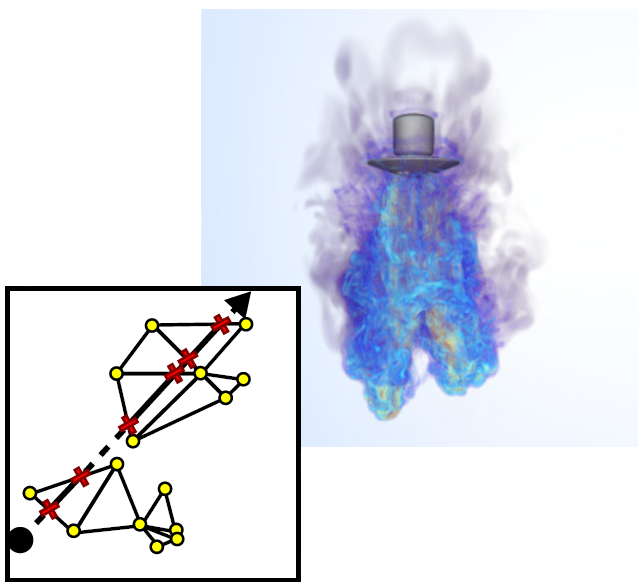
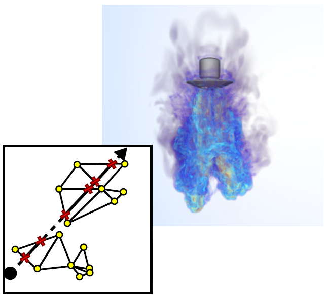

2022


 

The 12th IEEE Symposium on Large Data Analysis and Visualization
Authors: S. Zellmann, I. Wald, J. Barbosa, S. Demirci, A. Sahistan, U. Gudukbay

2022 IEEE Visualization Conference (VIS)
Authors: N. Morrical, A. Sahistan, U. Gudukbay, I. Wald, V. Pascucci
Eurographics Symposium on Parallel Graphics and Visualization
Authors: S. Zellmann, I. Wald, A. Sahistan, M. Hellmann, W. Usher
2021


2021 IEEE Visualization Conference (VIS) Short Papers
Authors: A. Sahistan, S. Demirci, N. Morrical, S. Zellmann, A. Aman, I. Wald, U. Gudukbay